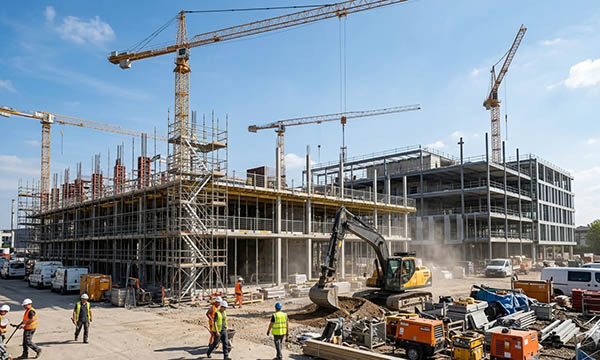

The construction sector is a fundamental driver of modern society, shaping residential, commercial, and public buildings, as well as critical infrastructure. Across Germany, and extending to France, Italy, Switzerland, the UK, Norway, Austria, Poland, and the Benelux countries, construction projects require meticulous planning, coordination among multiple professionals, and adherence to European standards, DIN regulations, and CE marking requirements.
Every aspect of construction, from structural elements to signage, contributes to functionality, safety, and aesthetics. Professional signage ensures clear orientation, enhances safety, and strengthens the building's visual identity, allowing visitors, employees, and residents to navigate spaces efficiently and confidently.
At SignXpert, we provide a complete range of construction signage solutions, including room number signs, tactile signs, wayfinding signs, facade signs, decals, and engraved signs.
All products can be customized to the unique requirements of each project and delivered quickly, which is crucial for construction timelines. Our high-quality and flexible signage solutions give buildings a clear, cohesive identity while maintaining full compliance with DIN, CE marking, and European accessibility standards.
By choosing SignXpert, construction projects across Germany and Europe can achieve both functionality and aesthetic excellence.
Construction Projects: Building Sustainability and Community Development
Construction is not just about creating structures — it is about shaping communities and sustainable environments.
Every building project, whether residential, commercial, or public, demands collaboration between architects, engineers, and contractors.
By designing sustainable, well-planned buildings, the construction sector ensures compliance with European safety, accessibility, and environmental standards, while allowing for future adaptability.
The quality of construction projects affects user experience, operational efficiency, and long-term maintenance costs.
Clear and durable building signage and wayfinding systems play a crucial role in meeting these goals, providing guidance for visitors, employees, and residents.
For example, proper tactile signs, emergency exit signs, and engraved wayfinding markers not only enhance safety but also contribute to a welcoming and inclusive environment.
Through thoughtful signage, construction projects across Germany, Austria, Switzerland, France, Italy, Poland, and the UK can support community growth, sustainability, and overall building efficiency.
Orientation and Safety Through Professional Signage
Signage is essential for building navigation, accessibility, and safety.
Room number signs, tactile signs, emergency exit signage, and wayfinding markers ensure that all users, including those with visual impairments, can navigate complex buildings safely.
In emergencies, well-placed facade signs, assembly point markers, and evacuation instructions help occupants respond quickly, improving safety outcomes.
Professional signage also contributes to a building’s identity and user experience.
Cohesive design and durable materials for engraved signs, facade signage, and decal systems improve readability, enhance aesthetics, and reinforce the building’s purpose.
In large public buildings, schools, hospitals, or commercial facilities across Germany and Europe, well-planned signage simplifies navigation, promotes safety, and strengthens visitor confidence.
Facades and Exterior Signage as a Building’s Identity
A building’s exterior signage creates the first impression for visitors.
Facade signs, decorative decals, and engraved signs highlight the building’s function, purpose, and aesthetic profile.
In public buildings, commercial properties, and institutional facilities, clear and professional external signage ensures that occupants and visitors can identify entrances and navigate efficiently.
Interior signage complements exterior systems, providing wayfinding signs, room identifiers, and tactile markers that guide users through corridors, offices, and communal areas.
By integrating interior and exterior signage, property owners in Germany, France, Italy, Switzerland, the UK, Norway, Austria, Poland, and the Benelux countries create cohesive environments that are functional, accessible, and visually appealing.
Why SignXpert Is the Trusted Partner for Construction Signage
SignXpert offers a full range of construction and building signage solutions tailored to the needs of projects across Germany and Europe.
Through a user-friendly online platform, customers can easily order room number signs, tactile signs, wayfinding signage, facade signs, and decals customized to project specifications.
Our products meet DIN, CE marking, and European standards, ensuring long-term durability, visibility, and compliance.
Whether for large-scale public facilities, commercial complexes, or residential developments, SignXpert delivers signage solutions that combine functionality, design, and accessibility.
Quick production and reliable delivery make it possible to meet tight construction schedules without compromising quality or budget.
By partnering with SignXpert, construction managers, architects, and property owners receive signage that is clear, professional, and compliant, supporting safe, navigable, and visually appealing buildings throughout Germany, Austria, Switzerland, France, Italy, the UK, Norway, Poland, and the Benelux countries.